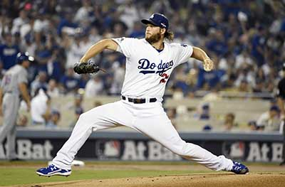

Pitching

Clayton Kershaw, LA Dogers
Pitching is one of the toughest strategic battles in sports.
As Yogi Berra once said,
"Baseball is ninety percent mental and the other half is physical."
Your job is to try and out think the batter that is against you at the plate.
Most people try and tell you that the best way to get people out is with a strong 95+ mph fast ball, and some good off speed.
Honestly the best thing you can have as a pitcher is natural movement on the ball.
The hardest pitch to hit, from a lefty or righty, is a fastball that runs toward your throwing hand side.
How you get there is through the correct mechanics.
When you begin your pitch whether it's a wind up, or coming out of the stretch, the number one thing you need is balance.
Taking smaller steps and making sure your balance is mostly on the ball of your back foot is key.
If you aren't balanced from the beginning when you begin your leg lift your body will fall from one side or the other and the ball will follow suit.
Next when you start your leg lift, again the most important thing you want is balance.
If you are balanced at the top of your leg lift your core will be activated, which will help with speed and accuracy.
As your leg comes down you don't want to swing it out from your body like you are actually kicking something.
You want it to be controlled and connected to your balance.
Have your leg come straight down parallel to your other leg, then have it swing foward towards home plate.
Don't have it swing out towards first or third, because if you do that you will lose balance, and therefore control.
Landing it is best to land heel to toe, as that is what your body wants to do naturally.
If you land toe first you will lose inches going toward the plate which is bad, because logically the close you are to the plate the closer you release the ball.
The closer to the plate you release the ball, the faster the ball goes because it has less it needs to travel to get to the plate.
As you land, you want to engage your back leg and push your body foward.
This is where 95% of you speed will come from.
Going backwards a bit, when you bring your leg kick down your want your hands to follow.
You want your glove hand to navigate the ball to your target.
Our bodies like to be in synch and symmetry, so whatever your front hand does, your back hand will follow.
Therefore, you want to have your glove hand pointed at your target somehow, and pull it directly in to your body.
If you pull it down you'll spike the ball, or throw it over the backstop.
If you pull it to the side you'll either hit the batter, or throw it at the dugout.
That's the biggest key to accuracy, is making sure your glove hand pulls directly in to your body.
When all of this is done correctly and in synch, your ball will be faster, and much more accurate.
Here is a video that will help you visually see what I'm saying.
The steps broken down
- First step small and on balance.
- Leg lift with bellybutton over your base foot
- Bring your front foot down and swing it toward the plate
- At the same time break your hands down and point your glove toward home
- Front foot lands heel to toe
- Bring your glove in toward your body
- Back hand should follow suit natrually and release the ball
These are different types of pitches that you can a learn.
- 4 Seam Fastball
- Grib your fingers across the mouth of the horseshoe on the baseball. Usually your fastest pitch, with the least amount of movement.
- 2 Seam Fastball
- Favored by left handed pithcers. Grib the ball along the seams that come closes together. Not as fast as the 4 Seam Fastball but will have a lot more movement.
- Change Up
- Circle change is the most common change up. Create an ok sign with your fingers, and grip it along along one of the horseshoe seams. Good change ups are about 10-15 mph slower than your fast ball and have a slight drop to them at the very end.
- Curve Ball
- Put your middle and index finger together and grip the ball on the seam of the horseshoe. Try and adjust your wrist to be sideways so when thrown, the ball has a foward spin to it.